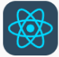
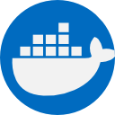
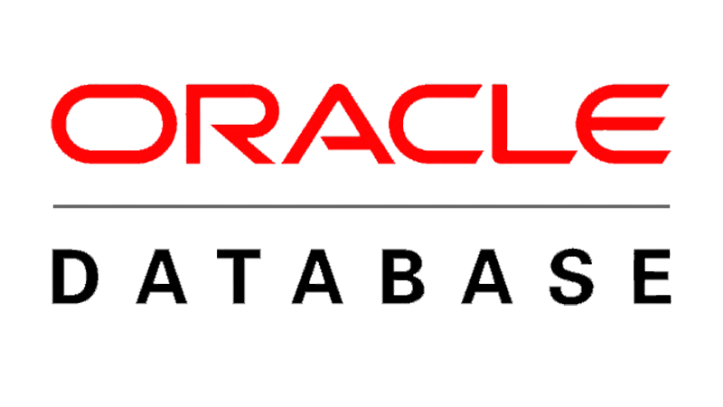

자기소개
백엔드와 프론트엔드 두 영역을 공부하는 웹 개발자 지망생입니다.
Spring BOOT API 서버와 NextJS 프론트엔드 서버를 이용한 개발 공부를 진행중에 있습니다.
풀스택 개발자가 되고 싶으면서도 나중에는 DevOps를 노려보고 싶습니다.
Study
- 프론트엔드
- HTML/CSS/JAVASCRIPT React와 jQuery를 다루기 위한 기본적인 개념들을 공부하였습니다.
- React/NextJS use hook를 사용한 상태값 제어와 backend api 서버와 통신하는 방법을 공부하였습니다.
- TailwindCSS 빠른 개발을 위하여 tailwindcss를 이용해 react 앱의 디자인을 입히는 것을 공부하였습니다.
- jQuery 기본적인 DOM 제어를 할 수 있도록 jQuery를 공부하였습니다.
- 백엔드
- Spring Boot 프레임워크 SPRING BOOT 프레임워크를 이용한 웹 API 개발 서버를 만드는 공부를 하였습니다.
- JPA, Mybatis 복잡한 데이터 조회를 위해 MyBatis를, 단순 CRUD를 위한 JPA를 공부하였습니다.
- Spring Security Security와 NextJS 서버의 JWT를 통해 인증 절차를 구현하는 공부를 하였습니다.
- SQL 튜닝에 관심이 많습니다. DB의 조회 쿼리의 성능을 올리기 위한 인덱스 설계나 쿼리 옵티마이저를 분석하는 데에 관심이 많습니다.
- Kafka를 이용한 대용량 트래픽 처리에 관심이 있습니다. Server Failure를 최소화하기 위한 Kafka 서버를 다뤄보고 싶습니다.
보유 기술
-

-

-

다뤄보고 싶은 기술
Education
| 출신학교 | 전공 | 기간 | 구분 |
|---|---|---|---|
| 강릉영동대학 | 정보통신 | 2010.3 ~ 2015.2 | 졸업 |
| 꽤좋은고등학교 | - | 2007.3 ~ 2009.2 | 졸업 |